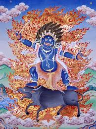

<p>
    <span style="font-size:12px">
        Ямантака в переводе с санскрита &ndash; одолевший и сокрушивший Яму, он также известен как Ваджрабхайрава. Ямантака идам и дхармапала, он является гневной ипостасью бодхисаттвы Манджушри.<br />
        Ямантака является одним из главных идамов тибетского Буддизма, также как &nbsp;Хеваджра, Гухьясамаджи, Чакрасамвара и Калачакра, практики всех этих идамов наиболее распространены в школе гелуг-па.<br />
        В иконографии он &nbsp;изображаться может как в одиночной форме, так и в форме яб-юм в союзе со своей шакти, духовной супругой Ваджраветали. В традиции тантрического Буддизма женское &ndash; это аспект мудрости, а мужское &ndash; аспект метода. Символически это передаётся изображением божества и его супруги. Ямантака в любой своей форме представляет собой единство мужского и женского аспектов.<br />
        Ямантака в форме яб-юм в иконографии изображают с шестнадцатью ногами, с тридцатью четырьмя руками, с девятью головами. Чаще всего &nbsp;он тёмно-синего цвета, но в некоторых садханах также встречаются манифестации его и других цветов, в мандале они окружают центрального тёмно-синего Ваджрабхайраву и имеют по три лица и по шесть рук. Центральная нижняя голова Ямантаки &ndash; голова буйвола.<br />
        В руках его с правой стороны дигуг, кинжал, топор, морскую раковину, стремя, палицу, ваджру, жезл, меч, дамару и другие атрибуты, а с левой стороны &nbsp;в его руках можно увидеть череп, голову, щит, ногу, аркан, лук, колокол, руку, саван и другие символические атрибуты. Под ногами его справа &ndash; человек, бык, осёл, верблюд, собака, овца и лиса &ndash; все это жертвенные животных в религии бон. Под ногами слева мы видим коршуна, сову, ворона, попугая, павлина и лебедя. Также по канону внизу тханки изображается кладбище.<br />
        Над восемью из девяти голов Ямантака изображается голова Манджушри, чьим проявлением он и считается
    </span>
</p>
